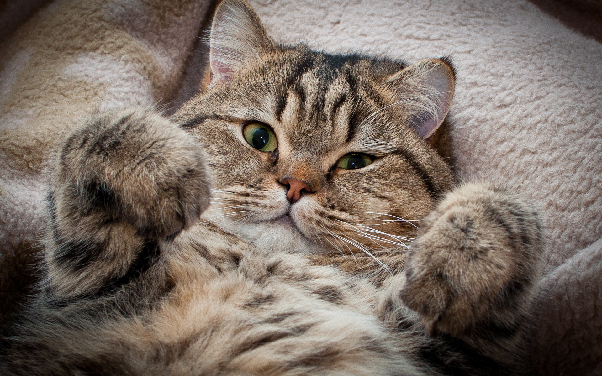
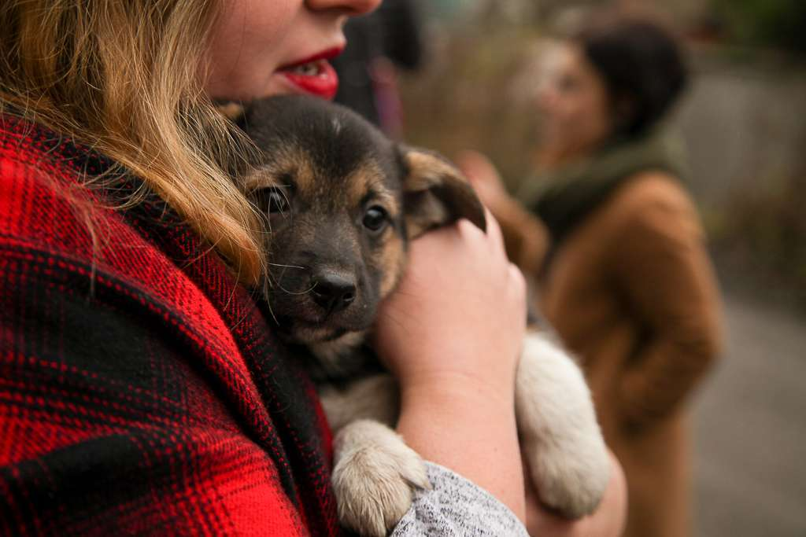
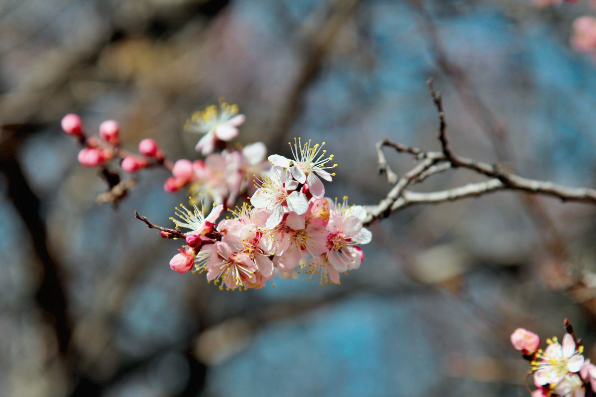

Задание 1
Котики - это круто!
Британские ученые сделали важное открытие: котики придают уверенности его хозяину, делают его счастливее. Всявязи с этим люди начинают позитивнее мыслись, меньше лениться, повышается продуктивность. Заводите котиков! Это круто!

Пес нашел семью
В Улан-Удэ 14-летний пес, спасенный волонтерами после ДТП, нашел семью: спустя полгода Пишто вернулся к хозяевам, которые считали его погибшим

Весна в самом разгаре
Вот уже несколько дней жители Уфы наслаждаются приятной весенней погодой. Прощайте теплые куртки! По словам синоптиков, такая теплая погода будет радовать людей еще долгое время. Выходите гулять!

Спорт - это жизнь
Спортсмен-любитель Максим Егоров устроил марафон через всю страну — он преодолел расстояние в 10 тысяч километров, добежав от Санкт-Петербурга до Владивостока
Технологии
В Калужской области запустили уникальную ИТ-платформу: в «Русском продукте» внедряют проект по цифровизации и построению цифрового двойника производства